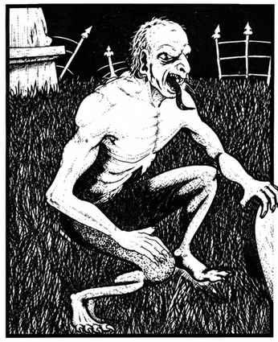

食尸鬼 · Ghoul
 |
|
食尸鬼是不死生物，通常由曾经为人类的生物转化而成，以人类及其他尸体为食。转化使它们心智错乱、遭到摧毁，却仍保留可怕的狡猾，足以有效猎杀猎物。它们用污秽的指甲与尖牙攻击。
食尸鬼的触碰会使人类僵直麻痹，包括矮人、侏儒、半精灵与半身人，但不包括精灵；通过对抗麻痹的豁免检定即可避免。任何人类被食尸鬼杀死后都会转化为食尸鬼，除非先接受祝圣；若已转化，则须先祝圣再复活。食尸鬼群总是无所畏惧地发动攻击。
除睡眠与魅惑法术外，食尸鬼会受到所有攻击方式影响。牧师可以驱散它们；防护邪恶法阵会完全阻挡它们。
海尸鬼 Lacedon。 海尸鬼是食尸鬼的海生形态，其他方面与普通食尸鬼相同。